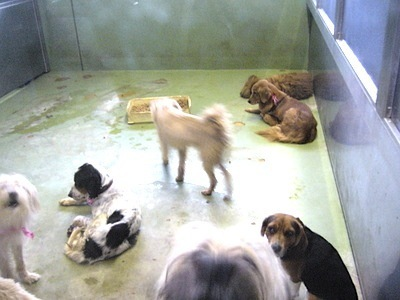
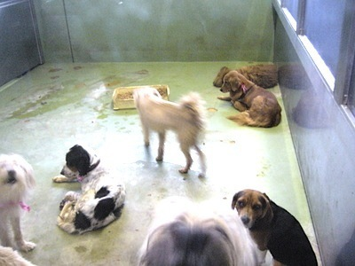

知っていましたか？
環境省によると
殺処分の件数は年々低下してきており、
さらに、譲渡数に関しても年々増加し続けています。
しかし今年の統計資料を見てみると
43,216匹
の犬猫が未だに殺処分されていました。
この事実をあなたはどう受け止めますか？
「減ってるのならいいじゃないか」
「そんな多くないじゃん」...
言い方を変えましょう。
「43,216」
これは身勝手な人間な行動により
奪われる命の数です。
何も理解しないまま
ただただ
苦しみながら消えていく命の数です。
「偽善だ」
と考える方もいるかも知れません。
それでも、
私はいつか、
人間の身勝手な行動によって
奪われる大切な命の数が
「０」になる事を願っています。
 

今後取り組むべき課題
①引取られるペットの数を減らす。
ペットが保健所に引取られる要因は、飼育放棄や高齢者飼育、
あるいは、迷子等の偶発的なものまでさまざまだ。
その中でも最も重大且つ解決し難い問題は、
「終生飼養」に反して無責任に保健所や愛護団体に引取らせる
飼育者がいることだ。飼い始めた後に苦労するであろうことを考えず、
「可愛い」という感情に流されて気軽に飼うことを決断してはいけないはずだ。
従って、行政と民間団体が協力して、責任を持って飼育できる人のみが
ペットを飼い始めることができる環境、及び、飼育者に責任を持って
ペットを飼育してもらう環境を作ることが課題である。
https://pedge.jp/interview/kanagawa-center1/
②引取られたペットを殺処分せずに済ませる。
結果として、保健所に引取られてしまったペットが殺処分されずに済むために、
保護センターが民間団体と協力して動物の継続的な引上げ活動を行ったり、
行政自体が積極的な返還・譲渡活動等を行っていく必要がある。
また、その際には、譲渡後に同じような問題が繰り返されないように、
保護されているペットに対して手厚いケアやしつけを行い、
健全な状態でペットを送りだす努力が重要だ。
解決に向けた先端事例
「神奈川県動物保護センター」「動物ふれあい教室」といった動物との触れ合いによる情操教育や、
マイクロチップの普及啓発等を行っている。ボランティアと協力した取り組みによって、
ここ数年間連続して犬・猫ともに殺処分ゼロを達成しています。詳しくは以下をご覧ください。
ここをクリック
2016年8月に東京都知事に就任した小池百合子氏が「東京都での殺処分ゼロ」を掲げており、
千代田区は「TNTA（Trap, Neuter, Tame, Adopt：一時保護／不妊・去勢手術／人に慣らす／譲渡する）」活動を
民間団体と協力して推し進めている。
ここをクリック
事情によりペットを飼育できなくなった人やペットの保護をしている人と、
里親になりたい人が交流できるWEBプラットフォームを提供している。
ここをクリック
殺処分数の高い猫に焦点を当て、賃貸マンションに猫がついてくる「猫付きマンション」や、
キャットフードや猫砂など日常のお買い物で保護活動に参加出来る仕組みの「ShippoTV」 の運営など、
様々な活動を通じて「シェルターから伴侶動物をもらう」 選択肢の認知向上に努めている。
ここをクリック
選択してください
(選択後に各ページに切り替わります)